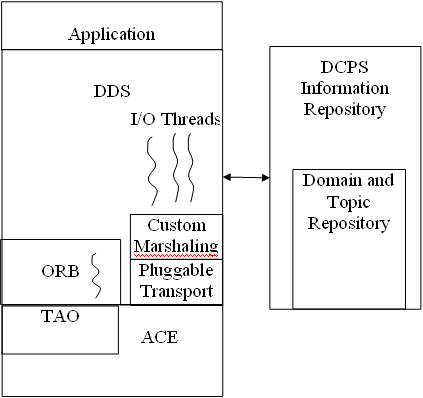

<div id="contenttext">

  <div class="bodytext" align="justify">
    <ul>
      <li>Custom marshaling
	<ul>
  	  <li>An efficient variant of CORBA's CDR is used</li>
  	</ul>
      </li>
      <li>DCPS Information Repository
	<ul>
	  <li>Separate process that brokers domain interactions</li>
	  <li>All participants interact and rendezvous through the repository</li>
	  <li>Needs to be running when DDS is used</li>
	  <li>Is not involved in the actual data flow</li>
        </ul>
      </li>
      <li>Threading
	<ul>
	  <li>OpenDDS creates several threads
	    <ul>
	      <li>Separate thread to run the DDS ORB</li>
	      <li>Separate threads for handling non-CORBA I/O</li>
	    </ul>
	  </li>
	</ul>
      </li>
    </ul>

    <p></p>
  </div>
</div>

